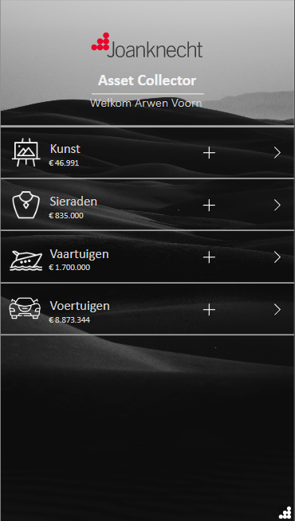
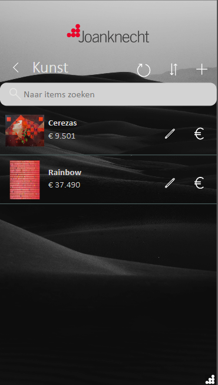
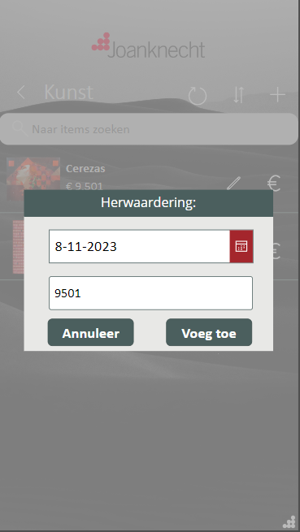
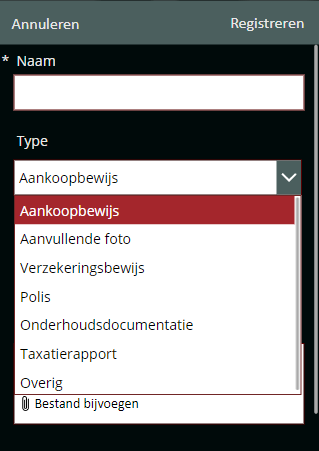

Joanknecht's clients maintain a diverse portfolio of investments, spanning stocks, private equity, real estate, and various assets. However, assets are often excluded from their financial reporting, prompting the creation of this app. The data output from this app is seamlessly integrated with multiple customer dashboards, enabling them to monitor the fluctuations in asset values over time. (Everything you see here is made from fake data)
Image 1: Homepage of the Asset Collector app
Assets are grouped into four primary categories. For instance, when you select an art item, the app displays it, allowing you to search, sort, refresh, or add items. Furthermore, you have the option to edit any item in case of registration errors or if the item needs to be removed. Additionally, the app provides the functionality to reevaluate an item's value with the help of the euro sign.
 Image 2: Asset Overview & Image 3: Asset reevaluation
For each registered item, you have the option to attach essential documents, such as proof of purchase or insurance certificates.
Image 4: Attaching vital documents to an asset.